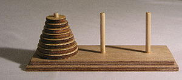
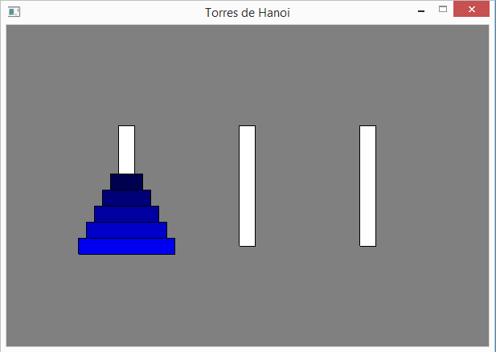
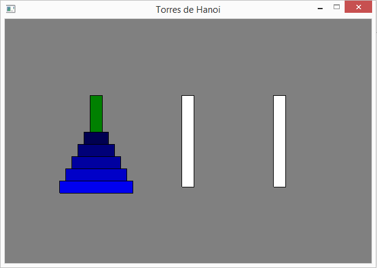
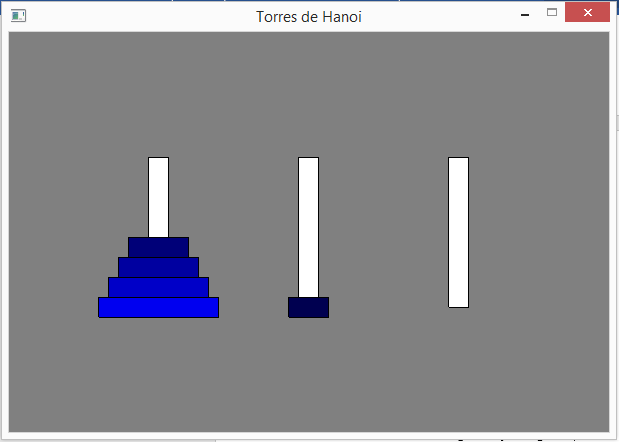
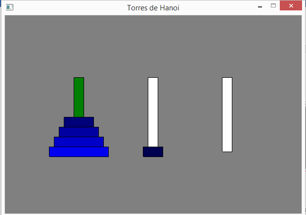
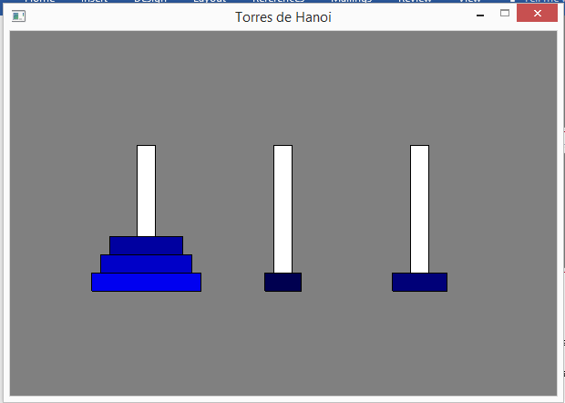
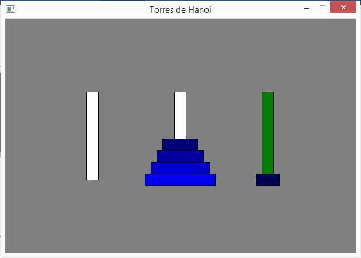
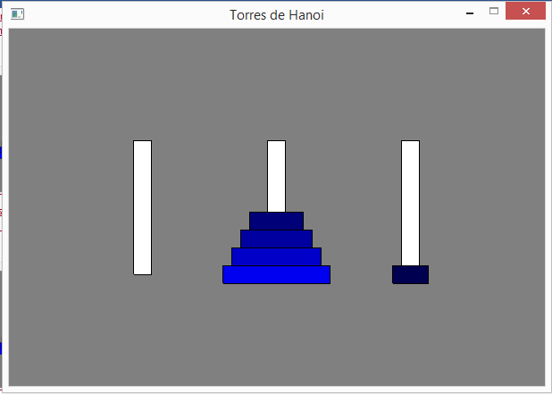
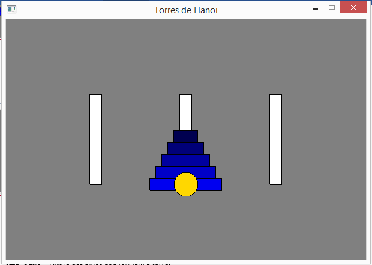

Torre de Hanói
Torre de Hanói não é exatamente um jogo, mas um "quebra-cabeças" que desafia a memória de trabalho do jogador para solucionar um problema que parece simples, mas que é relativamente trabalhoso...
A estrutura do jogo possui 3 pinos, um dos quais com vários discos posicionados em ordem decrescente de diâmetro (o maior na base do jogo e o menor no topo da pilha de discos (ver figura). O problema consiste em passar todos os discos de um pino para um outro, com as seguintes restrições:
1- apenas se pode movimentar um disco de cada vez;
2- um disco nunca pode ser posicionado em cima de um outro menor.
O número de discos pode variar... Proporcionalmente, o grau de dificuldade irá aumentar com o número de discos.

Torre de Hanói - wikipedia
Este é também um exemplo típico e muito interessante da utilização de pilhas, uma vez que apenas se pode retirar o último disco colocado em cada pino e, ao inserir um disco num determinado pino, este fica sempre por cima. Ou seja, o último disco a ser colocado num pino será sempre o primeiro a poder ser retirado desse pino (LIFO - Last IN First Out).
1 Exemplificação do jogo
Este jogo será desenvolvido num ambiente gráfico, utilizando o módulo p5. Na figura que se segue, vemos o ecrã inicial, em que o pino da esquerda aparece com 5 discos de vários tons de azul. Neste caso, quanto maior for o diâmetro de um disco mais claro será o azul com que é pintado.

O jogo é controlado com as teclas 1, 2 e 3.
As duas figuras que se seguem, mostram o que aconteceu quando o jogador começa por atuar a tecla 1 e depois tecla 2, indicando que o disco no topo do pino 1 (pino agora pintado a verde), vai passar para o topo do pino 2.
 
Continuando a jogar. Agora, se o jogador voltar à tecla 1, o pino 1 volta à cor verde, como mostra a figura que segue, mais à esquerda. A figura da direita mostra o que aconteceria se, por engano, a seguir à tecla 1, o jogador escolher a tecla 2. Trata-se de uma jogada não permitida, pois não é possível colocar um disco sobre outro mais pequeno.

Nesta situação de falha, voltaria a ter que escolher o pino 1, através da tecla 1, seguindo-se a escolha do pino 3, através da tecla 3. O resultado é mostrado nas duas figuras que se seguem.

Depois de algumas movimentações, acabámos por alcançar o objetivo, ou seja, colocar todos os discos num outro pino, como se mostra na sequência das três figuras que se seguem, pela escolha da tecla 3 (figura central), seguida da tecla 2 (figura à direita). Nesta figura, a bola amarela indica que o jogo terminou com sucesso.
 

|
|
Não está previsto, mas seria muito interessante ter, num canto da janela do jogo, a visualização do número de movimentações de discos, realizadas até ao momento. Assim, no final do jogo, teríamos acesso ao número de movimentações necessárias para alcançar o objetivo. Fica como desafio (opcional)... |
2 Preparação do jogo
Iremos definir as seguintes constantes:
· LARGURA - largura da janela gráfica;
· ALTURA - altura da janela gráfica;
· DISCOS - lista com os discos a ser utilizados (definidos pelo diâmetro);
· ESPESSURA_DISCO - espessura de cada disco;
· ALT_PINO - Altura dos pinos que formam a torre.
E também necessitaremos de duas variáveis globais:
· torres - uma lista que irá ter as 3 torres do jogo;
· jogada - pino selecionado pelo jogador.
Comece o seu ficheiro com o código fonte com as seguintes instruções:
from p5 import *
# definicoes globais
LARGURA = 600
ALTURA = 400
DISCOS = [120, 100, 80, 60, 40]
ESPESSURA_DISCO = 20
ALT_PINO = 150
# variáveis globais
torres = []
jogada = 0
3 A abstração Pilha
Cada pino funciona como uma pilha, como foi referido inicialmente. Assim, precisamos da abstração Pilha.
Não existe uma abstração de dados em Python que implemente na totalidade o conceito de Pilha, pelo que iremos utilizar a abstração Pilha definida na secção 10.3:
###################
# ABSTRAÇÃO PILHA #
###################
# construtor
def cria_pilha():
return []
# seletores
def pilha_vazia(pilha):
if len (pilha) == 0:
return True
else:
return False
def topo_da_pilha(pilha):
if not pilha_vazia(pilha):
return pilha[-1]
else:
return False
# modificadores
def poe_na_pilha(pilha, elem):
pilha.append(elem)
def tira_da_pilha(pilha):
if not pilha_vazia(pilha):
return pilha.pop()
else:
return False
###################
|
|
Analise as funções topo_da_pilha() e tira_da_pilha(), ambas com o mesmo parâmetro, e indique em que diferem. Serão necessárias as duas funções? Justifique. |
4 Estruturação do jogo
O jogo, relativamente simples, terá apenas as funções associadas ao módulo p5:
· setup() - configuração do jogo;
· draw() - ciclo de jogo.
· key_pressed() - responde aos eventos de premir as teclas.
5 Configuração do jogo
A configuração do jogo segue o seguinte algoritmo:
1. cria janela gráfica;
2. cria as 3 torres através de uma lista de 3 pilhas e preenche a primeira torre com os discos.
# inicialização do jogo
def setup():
global torres
# cria janela
title("Torres de Hanoi")
size(LARGURA, ALTURA)
# cria as 3 torres e preenche primeira torre
torres = [cria_pilha(), cria_pilha(), cria_pilha()]
for disco in DISCOS:
poe_na_pilha(torres[0], disco)
6 O ciclo de jogo
O ciclo de jogo faz apenas o desenho de todo o nível de jogo, tanto os pinos como os discos, e verifica se o jogador conseguiu colocar todos os discos num outro pino:
1.
desenha os pinos do jogo e os seus discos.
Caso o pino tenha sido selecionado pelo jogador para a sua jogada, é desenhado
a verde. Caso contrário a branco;
2. Verifica se o jogador conseguiu mover todos os discos para um outro pino;
Insira o seguinte código ,que implementa o ciclo de jogo, desenhando o ecrã de jogo:
# ciclo de jogo
def draw():
global torres, jogada
# posiciona as torres
ox = [0,0,0]
ox[0] = LARGURA//4
ox[1] = LARGURA//2
ox[2] = 3 * LARGURA//4
oy_base = ALTURA//2 + ALT_PINO//2
# desenha as torres e respetivos discos
background("gray")
rect_mode("CENTER")
for i in range(len(torres)):
if jogada == i+1: # inicialmente, jodaga = 0
fill("green")
else:
fill("white")
rect((ox[i], oy_base-ALT_PINO//2), ESPESSURA_DISCO, -ALT_PINO)
alt = oy_base
for disco in torres[i]:
fill(0, 0, disco*2) # B, de RGB, proporcional ao diâmetro do disco
rect((ox[i], alt), disco, ESPESSURA_DISCO)
alt -= ESPESSURA_DISCO
# verifica se ganhou
if torres[1] == DISCOS or torres[2] == DISCOS:
fill("gold")
if torres[2] == DISCOS:
circle((ox[2], oy_base), ESPESSURA_DISCO*2)
else:
circle((ox[1], oy_base), ESPESSURA_DISCO*2)
no_loop() # termina jogo
|
|
A função no_loop(), elimina a repetição da chamada à função draw(), pelo que ao jogador apenas é possível sair do jogo.
Analise o código com cuidado para perceber como é feito o desenho do ecrã de jogo.
|
7 O input do jogador
O jogador interage com o jogo através das teclas "1", "2" e "3", que lhe permitem selecionar o pino de origem e, de seguida, o pino de destino. Após o que é feita a deslocação do disco do topo, caso o pino de destino tenha como topo um pino de maior diâmetro, ou esteja vazio.
O código é o seguinte, que se baseia numa estrutura condicional de seleção múltipla:
# controla a interação com o utilizador através do teclado
def key_pressed():
global jogada, torres
# converte tecla em inteiro (1 a 3)
tecla = ord(str(key)) - ord("0")
|
|
A função ord()retorna um valor inteiro relacionado com o código do caracter que lhe for fornecido como argumento. Neste caso é o código ASCII. Assim, a tecla premida ("1", "2" ou "3") será convertida nos inteiros 1, 2 ou 3, ao subtrair o código do caracter "0".
|
|
|
A variável jogada representa uma máquina de estados, que permite saber se o jogador vai selecionar o pino de origem (estado 0) ou se vai selecionar o de destino (estado 1). Neste último caso faz a deslocação do disco entre os dois pinos. A seguinte estrutura de decisão alternativa faz ações distintas consoante o valor do estado.
|
# verifica teclas premidas
if jogada == 0:
# seleciona torre
if tecla >= 1 and tecla <=3:
jogada = tecla
else:
# move disco do topo
if tecla >= 1 and tecla <=3:
# so pode colocar sobre discos maiores
if not pilha_vazia(torres[jogada-1]) \
and (topo_da_pilha(torres[tecla-1]) > topo_da_pilha(torres[jogada-1]) \
or pilha_vazia(torres[tecla-1])):
poe_na_pilha(torres[tecla-1], tira_da_pilha(torres[jogada-1]))
jogada = 0
if __name__ == '__main__':
run()
8 Desafio final
Sendo um "quebra-cabeças", seria interessante que o computador fosse capaz de determinar a solução de forma automática. Na realidade, o algoritmo que resolve este problema é relativamente simples.
Leia com atenção esta explicação muito interessante da Khan Academy...
O algoritmo seguinte resolve o problema, criando uma lista de jogadas (tuplos com a origem e o destino dos movimentos)...
jogadas = []
# Algoritmo recursivo da torre de Hanoi
def hanoi(torre, origem, destino):
global jogadas
if len(torre) == 1:
jogadas.append((origem, destino))
else:
livre = 6 - (origem + destino)
hanoi(torre[1::], origem, livre)
jogadas.append((origem, destino))
hanoi(torre[1::], livre, destino)
|
|
Repare numa característica interessante deste algoritmo. O problema hanoi() faz duas chamadas ao subproblema hanoi()... Ou seja, esta função chama-se a si mesma. É uma função recursiva.
|
Para aprender a jogar basta imprimir a lista de jogadas:
hanoi(DISCOS, 1, 3)
for (o, d) in jogadas:
print("Move disco da torre", o, "para a torre", d)
Adapte este algoritmo para animar a resolução do "quebra-cabeças" de forma automática, animando a sua resolução "passo a passo" premindo uma tecla (por exemplo a tecla "espaço").
|
|
Partilhe a sua aplicação interativa!
|